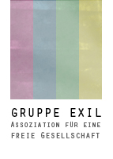

Hier möchten wir weitere Empfehlungen aussprechen für Gruppen, Verlage und Zeitschriften, welche wir für lesenswert halten.
Im Bereich der Gruppen weisen wir auf die „Freundinnen und Freunde der klassenlosen Gesellschaft“ aus Berlin hin, auf die Neocommunist_innen aus Frankfurt sowie auf die Gruppe Eiszeit aus Zürich, die AG Kritische Theorie aus Nürnberg und den Blog von Ali Schirasi.
Hinsichtlich der Verlage empfehlen wir ca ira als auch im Besonderen folgende Bücher aus der Reihe theorie.org: Michael Heinrich: „Kritik der politischen Ökonomie. Ein Einführung.“ und Biene Baumeister Zwi Negator: „Situationistische Revolutionstheorie.“
Bei den Zeitschriften wollen wir die Phase 2 aus Leipzig sowie die Jungle World aus Berlin in den Vordergrund rücken.
Desweiteren finden wir folgende Textarchive interessant: das Marxistisches Internetarchiv , das Situationistische Revue und das Textarchiv der Gruppe Sinistra.
Außerdem seien noch auf einige, die uns wichtig erscheinende Texte verwiesen:
Johannes Agnoli: Der Staat des Kapitals.
Situationistische Internationale: Über das Elend des studentischen Milieus.
Initiative Sozialististisches Forum Freiburg: Kommunismus und Israel.
Karl Marx: Der Fetischcharakter der Ware.
Theodor W. Adorno: Erziehung nach Auschwitz.
Wer uns verlinken möchte, kann dafür gerne einen der Banner wählen:
